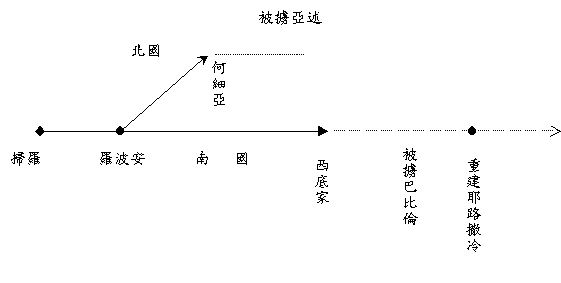
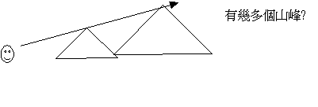

一.緒論
1.名義：
〜「先知」希伯來文(NABI)意思「如泉湧出」，指神的僕人受聖靈感動把神的話如活泉湧出。
2.分類
A.按篇幅而分
〜大小先知書基於篇幅而分「大」與「小」，不是由於內中信息的重要性
B.以時間而分
|
被
擄 前 |
書
名 |
主
要 對 象 |
|
約珥書
阿摩司書 何西阿書 |
(北國) |
|
|
俄巴底亞書
彌迦書
那鴻書 西番亞書
哈巴谷書 |
(南國) |
|
|
約拿書
俄巴底亞書 |
(外邦) |
|
|
被
擄 後 |
哈該書
撒迦利亞書 瑪拉基書 |
餘留的選民 |
3.內容：
A.斥責百姓的不義
「這悖逆、污穢、欺壓的城有禍了！他不聽從命令，不領受訓誨，不倚靠耶和華，不親近他的神。他中間的首領是咆哮的獅子；他的審判官是晚上的豺狼，一點食物也不留到早晨。他的先知是虛浮詭詐的人；他的祭司褻瀆聖所，強解律法。耶和華在他中間是公義的，斷不做非義的事，每早晨顯明他的公義，無日不然；只是不義的人不知羞恥。」番3:1-5
B.預言列國的命運
a.審判的預定
「耶和華的大日臨近，臨近而且甚快，乃是耶和華日子的風聲；勇士必痛痛的哭號。那日是忿怒的日子，是急難困苦的日子，是荒廢淒涼的日子，是黑暗幽冥、密雲烏黑的日子，是吹角吶喊的日子，要攻擊堅固城和高大的城樓。我必使災禍臨到人身上，使他們行走如同瞎眼的，因為得罪了我。他們的血必倒出如灰塵；他們的肉必拋棄如糞土。當耶和華發怒的日子，他們的金銀不能救他們；他的忿怒如火必燒滅全地，毀滅這地的一切居民，而且大大毀滅。」番1:14-18
b.復興的盼望
「錫安的民哪，應當歌唱！以色列啊，應當歡呼！耶路撒冷的民哪，應當滿心歡喜快樂！耶和華已經除去你的刑罰，趕出你的仇敵。以色列的王耶和華在你中間；你必不再懼怕災禍。當那日，必有話向耶路撒冷說：不要懼怕！錫安哪；不要手軟！耶和華你的神是施行拯救、大有能力的主。他在你中間必因你歡欣喜樂，默然愛你，且因你喜樂而歡呼。」番3:14-17
c.主來的預表
「伯利恆、以法他啊，你在猶大諸城中為小，將來必有一位從你那裡出來，在以色列中為我作掌權的；他的根源從亙古，從太初就有。」彌5:2
C.描述先知情懷
「先知哈巴谷所得的默示。他說：耶和華啊！我呼求你，你不應允，要到幾時呢？我因強暴哀求你，你還不拯救。」哈1:1-2
4.讀經時注意事項
A.認識背景名字

b.名稱
〜南 國：猶大家、耶路撒冷、猶大
〜北 國：以色列家、雅各家、以法蓮、撒瑪利亞(北國之首都)
〜以 東：以掃、提幔
〜亞 述：尼尼微
〜巴比倫：迦勒底
〜吉 甲：北國地方，以前會幕所在地，卻成為異端獻祭之所
〜伯亞文：北國之地，原稱伯特利，卻成拜牛犢之地
〜錫安山：耶路撒冷
B.認識神與選民立的約
〜選民的亡國日「巴勒斯坦的約」(申29-30)及「大衛的約」(撒下7:8-17)有關，他們亡國，因為不守約，而遭神的審判，而利26及申28-32已早預言被擄的事。
C.認識解釋預言的原則
a.留意前後之的解釋
「「我夜間觀看，見一人騎著紅馬，站在窪地番石榴樹中間。在他身後又有紅馬、黃馬，和白馬。」我對與我說話的天使說：「主啊，這是什麼意思？」他說：「我要指示你這是什麼意思。」那站在番石榴樹中間的人說：「這是奉耶和華差遣在遍地走來走去的。」那些騎馬的對站在番石榴樹中間耶和華的使者說：「我們已在遍地走來走去，見全地都安息平靜。」」亞1:8-11
「我舉目觀看，見有四角。我就問與我說話的天使說：「這是什麼意思？」他回答說：「這是打散猶大、以色列，和耶路撒冷的角。」」亞1:18-19
〜避免太靈意解釋，如經文本身已說明，就用此解釋。
b.留意新約的解釋
「以後，我要將我的靈澆灌凡有血氣的。你們的兒女要說預言；你們的老年人要做異夢，少年人要見異象。在那些日子，我要將我的靈澆灌我的僕人和使女。「在天上地下，我要顯出奇事，有血，有火，有煙柱。日頭要變為黑暗，月亮要變為血，這都在耶和華大而可畏的日子未到以前。到那時候，凡求告耶和華名的就必得救；因為照耶和華所說的，在錫安山，耶路撒冷必有逃脫的人，在剩下的人中必有耶和華所召的。」」珥2:28-32
「五旬節到了，門徒都聚集在一處。忽然，從天上有響聲下來，好像一陣大風吹過，充滿了他們所坐的屋子，又有舌頭如火焰顯現出來，分開落在他們各人頭上。他們就都被聖靈充滿，按著聖靈所賜的口才說起別國的話來。」徒2:1-4
「你們想這些人是醉了；其實不是醉了，因為時候剛到巳初。這正是先知約珥所說的：神說：在末後的日子，我要將我的靈澆灌凡有血氣的。你們的兒女要說預言；你們的少年人要見異象；老年人要做異夢。在那些日子，我要將我的靈澆灌我的僕人和使女，他們就要說預言．．．．」徒2:15-21
c.留意預言的局部應驗的重性
「到那日，我必建立大衛倒塌的帳幕，堵住其中的破口，把那破壞的建立起來，重新修造，像古時一樣，使以色列人得以東所餘剩的和所有稱為我名下的國。此乃行這事的耶和華說的。耶和華說：日子將到，耕種的必接續收割的；踹葡萄的必接續撒種的；大山要滴下甜酒；小山都必流奶（原文作消化，見約珥三章十八節）。我必使我民以色列被擄的歸回；他們必重修荒廢的城邑居住，栽種葡萄園，喝其中所出的酒，修造果木園，吃其中的果子。」摩9:11-14

〜有時預言的經文是指向以色列人被擄歸回，但這只局部應驗，將來(未發生)更會成為萬國前來朝見神之地。
〜另外，有時先知書題到「耶和華的日子」是指向神使北國滅亡的日子，但有時候預言是有重性，更指向將來啟示錄主再來，審判臨到列邦的日子。
二.真理
1.認識人的罪惡
A.北國的敗壞
「當烏西雅、約坦、亞哈斯、希西家作猶大王，約阿施的兒子耶羅波安作以色列王的時候，耶和華的話臨到備利的兒子何西阿。耶和華初次與何西阿說話，對他說：「你去娶淫婦為妻，也收那從淫亂所生的兒女；因為這地大行淫亂，離棄耶和華。」於是，何西阿去娶了滴拉音的女兒歌篾。這婦人懷孕，給他生了一個兒子。」何1:1-3
＊整體淫亂
〜沒有一個好王【耶羅波安(王下14:24),撒加利雅(王下15:9),沙龍(?)米拿現(王下15:18),比加轄(王下15:24),比加(王下15:28),何西亞(王下17:2)
】
〜全地敗壞
B.南國的不義
a.二城的不義
「萬民哪，你們都要聽！地和其上所有的，也都要側耳而聽！主耶和華從他的聖殿要見證你們的不是。看哪，耶和華出了他的居所，降臨步行地的高處。眾山在他以下必消化，諸谷必崩裂，如蠟化在火中，如水沖下山坡。這都因雅各的罪過，以色列家的罪惡。雅各的罪過在那裡呢？豈不是在撒瑪利亞嗎？猶大的邱壇在那裡呢？豈不是在耶路撒冷嗎？」
彌1:2-5
〜邱壇指在較高的地方設壇敬拜神，久而久之，將邱壇所拜的神，取代了神的位置
b.事奉者的不義
「他們（或作：假先知）說：你們不可說預言；不可向這些人說預言，不住地羞辱我們。雅各家啊，豈可說耶和華的心不忍耐嗎（或作：心腸狹窄嗎）？這些事是他所行的嗎？我耶和華的言語豈不是與行動正直的人有益嗎？」彌2:6-7
c.百姓令神失望
「我的百姓啊，我向你做了什麼呢？我在什麼事上使你厭煩？你可以對我證明。我曾將你從埃及地領出來，從作奴僕之家救贖你；我也差遣摩西、亞倫，和米利暗在你前面行。」彌6:3-4
「我朝見耶和華，在至高神面前跪拜，當獻上什麼呢？豈可獻一歲的牛犢為燔祭嗎？耶和華豈喜悅千千的公羊，或是萬萬的油河嗎？我豈可為自己的罪過獻我的長子嗎？為心中的罪惡獻我身所生的嗎？世人哪，耶和華已指示你何為善。他向你所要的是什麼呢？只要你行公義，好憐憫，存謙卑的心，與你的神同行。」彌6:6-8
C.列邦的狂傲
a.狂傲自誇
「我使你以東在列國中為最小的，被人大大藐視。住在山穴中、居所在高處的啊，你因狂傲自欺，心裡說：誰能將我拉下地去呢？」俄2-3
b.不顧兄弟
「因你向兄弟雅各行強暴，羞愧必遮蓋你，你也必永遠斷絕。當外人擄掠雅各的財物，外邦人進入他的城門，為耶路撒冷拈鬮的日子，你竟站在一旁，像與他們同夥。」俄10-11
c.幸災樂禍
「你兄弟遭難的日子，你不當瞪眼看著；猶大人被滅的日子，你不當因此歡樂；他們遭難的日子，你不當說狂傲的話。」俄12
2.認識神的屬性
A.忌邪施報的神
「耶和華是忌邪施報的神。耶和華施報大有忿怒；向他的敵人施報，向他的仇敵懷怒。耶和華不輕易發怒，大有能力，萬不以有罪的為無罪。他乘旋風和暴風而來，雲彩為他腳下的塵土。」鴻1:2-3
B.熱心成事的神
a.為重建錫安而極其火熱
「與我說話的天使對我說：「你要宣告說，萬軍之耶和華如此說：我為耶路撒冷為錫安，心裡極其火熱。我甚惱怒那安逸的列國，因我從前稍微惱怒我民，他們就加害過分。所以耶和華如此說：現今我回到耶路撒冷，仍施憐憫，我的殿必重建在其中，準繩必拉在耶路撒冷之上。這是萬軍之耶和華說的。」亞1:14-16
b.為復興錫安而極其火熱
「萬軍之耶和華的話臨到我說：「萬軍之耶和華如此說：我為錫安心裡極其火熱，我為他火熱，向他的仇敵發烈怒。耶和華如此說：我現在回到錫安，要住在耶路撒冷中。耶路撒冷必稱為誠實的城，萬軍之耶和華的山必稱為聖山。」亞8:1-3
C.滿有大能的神
a.大自然要聽祂話
「然而耶和華使海中起大風，海就狂風大作，甚至船幾乎破壞。」拿1::4
「耶和華安排一條大魚吞了約拿，他在魚腹中三日三夜。」拿1:17
「耶和華吩咐魚，魚就把約拿吐在旱地上。」拿2:10
b.事奉者要降服祂
「約拿卻起來，逃往他施去躲避耶和華；下到約帕，遇見一隻船，要往他施去。他就給了船價，上了船，要與船上的人同往他施去躲避耶和華。」拿1:3
「約拿在魚腹中禱告耶和華他的神，」拿2:1
「耶和華的話二次臨到約拿說：「你起來！往尼尼微大城去，向其中的居民宣告我所吩咐你的話。」約拿便照耶和華的話起來，往尼尼微去。這尼尼微是極大的城，有三日的路程。約拿進城走了一日，宣告說：「再等四十日，尼尼微必傾覆了！」」拿3:1-4
c.叛悖民要信服祂
「約拿進城走了一日，宣告說：「再等四十日，尼尼微必傾覆了！」尼尼微人信服神，便宣告禁食，從最大的到至小的都穿麻衣（或作：披上麻布）。」拿3:4-5
D.充滿憐憫的神
a.忘恩也揀選
「以色列年幼的時候，我愛他，就從埃及召出我的兒子來。先知越發招呼他們，他們越發走開，向諸巴力獻祭，給雕刻的偶像燒香。」何11:1-2
b.不知亦教養
「我原教導以法蓮行走，用膀臂抱著他們，他們卻不知道是我醫治他們。」何11:3
c.悖逆仍不變
「我的民偏要背道離開我；眾先知雖然招呼他們歸向至上的主，卻無人尊崇主。以法蓮哪，我怎能捨棄你？以色列啊，我怎能棄絕你？我怎能使你如押瑪？怎能使你如洗扁？我回心轉意，我的憐愛大大發動。」何11:7-8
3.認識神僕樣式
〜在罪惡快滅亡的世代中，先知會有甚麼表現
A.有疑問
「先知哈巴谷所得的默示。他說：耶和華啊！我呼求你，你不應允，要到幾時呢？我因強暴哀求你，你還不拯救。你為何使我看見罪孽？你為何看著奸惡而不理呢？毀滅和強暴在我面前，又起了爭端和相鬥的事。因此律法放鬆，公理也不顯明；惡人圍困義人，所以公理顯然顛倒。耶和華說：你們要向列國中觀看，大大驚奇；因為在你們的時候，我行一件事，雖有人告訴你們，你們總是不信。」哈1:1-5
B.有勇氣
「亞瑪謝又對阿摩司說：「你這先見哪，要逃往猶大地去，在那裡糊口，在那裡說預言，卻不要在伯特利再說預言；因為這裡有王的聖所，有王的宮殿。」阿摩司對亞瑪謝說：「我原不是先知，也不是先知的門徒（原文作兒子）。我是牧人，又是修理桑樹的。耶和華選召我，使我不跟從羊群，對我說：『你去向我民以色列說預言。』」摩7:12-15
C.有順服
「耶和華初次與何西阿說話，對他說：「你去娶淫婦為妻，也收那從淫亂所生的兒女；因為這地大行淫亂，離棄耶和華。」於是，何西阿去娶了滴拉音的女兒歌篾。這婦人懷孕，給他生了一個兒子。」何1:2-3
D.有信念
a.信神使他起來
「至於我，我要仰望耶和華，要等候那救我的神；我的神必應允我。我的仇敵啊，不要向我誇耀。我雖跌倒，卻要起來；我雖坐在黑暗裡，耶和華卻作我的光。」彌7:7-8
b.信仇敵必遭報
「那時我的仇敵，就是曾對我說「耶和華你神在那裡」的，他一看見這事就被羞愧遮蓋。我必親眼見他遭報；他必被踐踏，如同街上的泥土。」彌7:10
c.信神赦免餘民